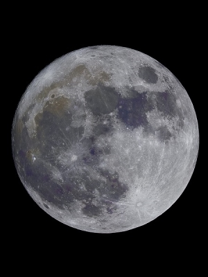

General Rulings
- Dark Fate: While not restricted per se, we will be keeping an eye on what said Fate is. Some Dark Fates don't work well with the setting and we reserve the right to ask it be removed or modified.
- Property: Property is not required to represent owning property as this can be covered with Resources alone. It may be taken to represent property holdings above and beyond what Resources would normally allow, but is not needed in most circumstances.
- While we do recognize the Language Merit, we also use the house rule of receiving one optional language for each dot of Academics you may have. The merit Natural Linguist still works as a two for one blessing, except when trying to double dip with the Language merit AND Academics (pick one)!
Mortal Rulings
- "Vanilla" Mortals (i.e. those who have no Numina, Kinfolk status, etc) are no longer allowed on Neon Nightmares.
- Callow Kinfolk (i.e. those who do not know they are Kin) are no longer allowed on Neon Nightmares.
- Kinfolk may purchase gifts at creation contrary to the book, HOWEVER it is massively expensive. You must spent 15 freebies for within their Breed or Tribe, and 20 outside of Breed or Tribe.
Mage Rulings

- No weapon Wonders at creation.
- Twin Souls is viable as a merit, but the other half of said pairing will not be played as an NPC by the ST-Team. If you take this at creation, you may advertise to other players you are seeking a partner, but until a PC that also has the merit is paired with yours then the merit remains passive and grants no benefit.
- Legend, Pastlives and Blessing for Mage require explanation on how you got these and who are the important people in your lineage. Or in the case of Legend, what legend are you connected to. Be specific!
We use the Revised MET Rules for determining backlash. If you gain Paradox and your new rating in that stat would be above 5, an ST will "draw" a card using a bot to determine how the Backlash manifests.
- Details can be found [here].
- Due to a bit of confusion over the official rules and affinity spheres, we at Neon Nightmares will be using the ruling that no sphere can be higher ranked than your affinity sphere. Other spheres can match the affinity, but none can exceed it. This is in addition to the "cannot exceed Arete" rule.
Shifter Rulings

- No weapon Fetishes at creation.
- Purebreed is a double edged sword for both character and player. Please write a lineage for your character noting the deeds that made them all so important. After PB 3, since you are a paragon of the Nation's past heroes all renown losses are doubled since you are held to a higher standard than most mongrels.
- Spirit Heritage is RARE, you'll have to explain how it ended up in your line. Also please do not be vague of what spirit brood you're apart of. As something like 'Rural' is too wide a circle of influence, but 'Bull' is not.
- Ancestors- For your ancestor ally, please give them a name and a specialty! It helps your STs a lot. After all, if your Uncle Buck 'Rootin' Tootin' Cowboy Shootin'" comes to help you, you're probably not getting computer advice from the guy.
- If you have Kinfolk or Familiar you will be playing those characters in game, not an ST, please note on your sheet what they are are capable of (they don't need a full sheet of course) - of course be cool about this, we are keeping an eye out for metagaming!
![[here]](paradox.jpg){kind=link}